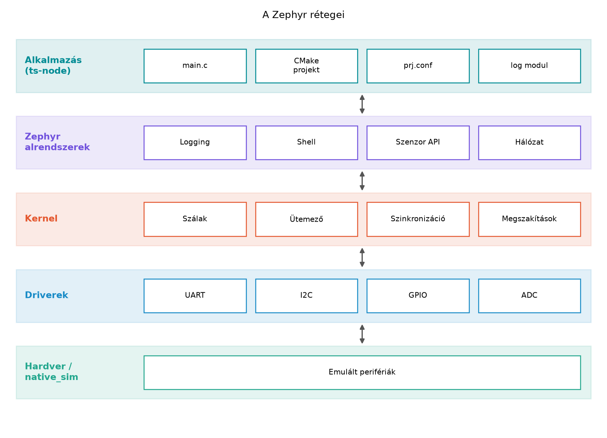

A TerraSense üvegházában a talajból mért adatok és a szelepvezérlés
már korántsem fér el egyetlen jól megszerkesztett while (1)
ciklusban. A csomópontnak egyszerre kell mintát vennie, rádiós
kapcsolatot tartania, parancsokat fogadnia, és még a saját hibáját is
figyelnie. Ha mindezt egyetlen végtelen ciklusba írjuk, akkor a
leglassabb feladat – például egy hosszú rádiós várakozás – az összes
többi feladatot is feltartja. Az ilyen rendszereknél nem elég gyorsnak
lenni, hanem időben determinisztikusan kell reagálni.
Ezt a problémát oldja meg egy valós idejű operációs rendszer (Real-Time
Operating System, RTOS), amely az eszköz erőforrásait szálakra osztja,
és futás közben ütemezi azokat. A TerraSense-ben a Zephyr RTOS-t
használjuk, mert a native_sim céllal valódi hardver nélkül
is teljes rendszert fejleszthetünk és tesztelhetünk.
Definíció (super loop). A super loop olyan programstruktúra, amely egyetlen végtelen ciklusban, sorban hívja meg az összes feladatot. Nincs ütemező, nincs párhuzamos végrehajtás, a feladatok sorrendje rögzített.
Definíció (RTOS). Az RTOS olyan operációs rendszer, amely több, egymástól független végrehajtási szálat kezel, és a szálakat prioritásuk vagy időzítéseik szerint ütemezi. Az RTOS célja, hogy a kritikus eseményekre a válaszidő felső korlátja ismert és betartható legyen.
Definíció (valós idejűség). A valós idejűség (real-time) nem azt jelenti, hogy a rendszer gyors, hanem azt, hogy a feladatok válaszideje determinisztikus: meg tudjuk mondani, hogy egy adott eseményre legfeljebb mennyi időn belül reagál a rendszer. Ha ez a korlát nem teljesül, a rendszer meghibásodik.
A super loop egyszerű, csökkenti a bonyolultságot, és kis erőforrásokon is elfut. Hátránya, hogy a legrosszabb esetben a válaszidő a leghosszabb feladat idejének és a többi feladat idejének összege. Az RTOS ezt úgy oldja fel, hogy különböző feladatokat különböző szálakba szervez, és az ütemező dönti el, melyik futhat. Egy magasabb prioritású szál azonnal megszakíthatja az alacsonyabb prioritású szálat, így a kritikus válaszidő már nem függ a nem kritikus feladatok hosszától.
A Zephyr RTOS moduláris, Linux-szerűen felépülő rendszer. A kernel
biztosítja a szálakat, az ütemezőt, a megszakításkezelést és a
szinkronizációs objektumokat. A fölötte lévő alrendszerek – például a
naplózás, a shell, a szenzor API, a hálózati stack, a Bluetooth stack –
mind ezt a magot használják. A driverek a hardverhez vagy a
native_sim perifériáihoz biztosítanak egységes
hozzáférést.

A rétegek között felfelé mutató függőség van: az alkalmazás a Zephyr
szolgáltatásait hívja, a kernel a drivereket vezérli, a driverek pedig a
hardverhez vagy a szimulátorhoz férnek hozzá. A native_sim
board az alsó réteget emulálja, így ugyanannak a kódnak a viselkedését
valós hardver nélkül is vizsgálhatjuk.
Definíció (west). A west a Zephyr
hivatalos meta-eszköze. Egyetlen felületen kezeli a forrás- és
modulkezelést (west init, west update), a
buildet (west build), a feltöltést
(west flash) és a debugolást. A west a Zephyr
workspace-ben dolgozik, és a ZEPHYR_BASE környezeti
változón keresztül találja meg a Zephyr forráskódját.
Egy minimális Zephyr-alkalmazás a következő fájlokból áll:
CMakeLists.txt – a build belépési pontja. Megkeresi a
Zephyr build rendszerét és definiálja az alkalmazás fordítási
egységeit.prj.conf – a Kconfig beállítások gyűjteménye. Itt
kapcsoljuk be a Zephyr alrendszereit, így a naplózást
(CONFIG_LOG) és a shellt (CONFIG_SHELL).src/main.c – az alkalmazáskód belépési pontja. A
main függvény egy szálként indul.boards/<board>.overlay – devicetree overlay,
amellyel az adott board hardverleírását egészítjük ki. Az
i009 laborban ez még üres, a későbbi szenzorok és
perifériák itt jelennek meg.A prj.conf használatával a Zephyr konfigurációját az
alkalmazás szintjén hangoljuk. A fordítási rendszer automatikusan
beolvassa a projekt gyökerében lévő prj.conf-ot, ezért a
fájlnak pontosan ezen a néven és helyen kell lennie.
A Zephyr naplózó alrendszere futási időben gyűjti az üzeneteket. A
modul regisztrálásához a LOG_MODULE_REGISTER makrót
használjuk, amely automatikusan hozzárendeli a modul nevét és a
beállított naplózási szintet. A LOG_INF,
LOG_DBG, LOG_WRN és LOG_ERR
makrók a printf-szerű formázást támogatják.
A beépített shell parancssori interfész, amely futás közben
kérdezhető le. A shell engedélyezése a prj.conf-ban
történik, és a shell parancsokkal például a kernel állapotát
kérdezhetjük le (kernel uptime), vagy a naplózást
vizsgálhatjuk. A shell különösen hasznos a native_sim
fejlesztés során, mert a szimulált eszközt interaktívan tudjuk
faggatni.
A választás super loop és RTOS között az eszköz bonyolultságától és a kritikus időzítési követelményektől függ.
| Szempont | Super loop | Zephyr RTOS |
|---|---|---|
| Erőforrásigény | minimális | nagyobb, de konfigurálható |
| Válaszidő | a ciklus legrosszabb ideje | prioritásos ütemezés, determinisztikus |
| Párhuzamosság | nincs | szálak, szemaforok, üzenetsorok |
| Bonyolultság | egyszerű | meredekebb tanulási görbe |
| Tipikus alkalmazás | egy feladatú, akkumulátoros minimál eszköz | hálózati protokollok, BLE, OTA, eszközmenedzsment |
A TerraSense ts-node-nak a későbbiekben BLE-kapcsolatra,
parancsfeldolgozásra és időzített szenzormintavételre lesz szüksége. Ez
indokolja az RTOS használatát. A FreeRTOS alternatívát jelent, kisebb
mérettel és egyszerűbb API-val, de a Zephyr beépített
devicetree-támogatást, széles alrendszer-kínálatot (szenzor, hálózat,
Bluetooth) és native_sim-en való futtatást kínál. A TerraSense-ben ezért
a Zephyrt választjuk.
ts-node projektvázMunkakönyvtár: ~/iot-labor/
mkdir -p ~/iot-labor/i009/ts-node/src ~/iot-labor/i009/ts-node/boards
cd ~/iot-labor/i009/ts-nodeA labor célja egy futó Zephyr-alkalmazás, amely másodpercenként naplózza a „szenzormintát”, és shellt biztosít. A minták ebben a vázban még illusztratív értékek; a valódi szenzorolvasás a Szenzorolvasás a Zephyr sensor API-val alfejezetben kerül be.
Hozd létre a következő három fájlt.
~/iot-labor/i009/ts-node/CMakeLists.txt
cmake_minimum_required(VERSION 3.20.0)
find_package(Zephyr REQUIRED HINTS $ENV{ZEPHYR_BASE})
project(ts-node)
target_sources(app PRIVATE src/main.c)A find_package(Zephyr REQUIRED) hívás csatolja a Zephyr
build rendszerét. A project(ts-node) megadja a projekt
nevét. A target_sources(app PRIVATE src/main.c) a
fordítandó forrásfájlt regisztrálja; a main.c mellé később
további forrásfájlokat is felvehetünk.
~/iot-labor/i009/ts-node/prj.conf
# TerraSense node alap konfiguráció
CONFIG_LOG=y
CONFIG_LOG_DEFAULT_LEVEL=3
CONFIG_SHELL=y
CONFIG_SHELL_BACKEND_SERIAL=y
CONFIG_PRINTK=yA CONFIG_LOG_DEFAULT_LEVEL=3 az INFO
szintet jelenti. A CONFIG_SHELL=y és a
CONFIG_SHELL_BACKEND_SERIAL=y a shellt a soros konzolon
indítja; native_sim esetén ez a stdin/stdout-ra kötődik. A
pontos backend nevek verziófüggőek lehetnek, ezért ellenőrizni kell a
használt Zephyr kiadás dokumentációját.
~/iot-labor/i009/ts-node/src/main.c
#include <zephyr/kernel.h>
#include <zephyr/logging/log.h>
LOG_MODULE_REGISTER(ts_node, LOG_LEVEL_INF);
int main(void)
{
uint32_t counter = 0;
LOG_INF("TerraSense node starting");
while (1) {
LOG_INF("sample #%u: T=25.3 C, RH=61.2 %%", counter + 1);
counter++;
k_sleep(K_SECONDS(1));
}
return 0;
}A LOG_MODULE_REGISTER(ts_node, LOG_LEVEL_INF);
regisztrálja a ts_node naplózó modult INFO
szinttel. A k_sleep(K_SECONDS(1)) hívás a szálat egy
másodpercre blokkolja, így a ciklus ütemezése a szimulált időben éppen
egy másodperc. A %% arra szolgál, hogy a log formázó a
százalékjelet százalékjelként értelmezze.
Hozd létre a devicetree overlay fájlt is, üresen, hogy a projektstruktúra teljes legyen.
~/iot-labor/i009/ts-node/boards/native_sim.overlay
/* TerraSense node: ebben a laborban nincs további devicetree overlay. */A buildet a Zephyr workspace-ből indítjuk. A workspace pontos helye a
A labor felállítása alfejezetben beállított
~/zephyrproject; ha más, cseréld ki.
cd ~/zephyrproject
west build -d ~/iot-labor/i009/build -b native_sim ~/iot-labor/i009/ts-nodeA -d kapcsoló adja meg a build könyvtárat, a
-b native_sim a cél boardot, a forráskönyvtár pedig a
projekt gyökere. A sikeres build után a futtatható állomány a
~/iot-labor/i009/build/zephyr/zephyr.exe.
Futtasd a programot:
~/iot-labor/i009/build/zephyr/zephyr.exeA várt kimenet (a verzió és az időbélyeg formátuma a buildtől függően változhat):
*** Booting Zephyr OS build v3.7.0 ***
[00:00:00.000,000] <inf> ts_node: TerraSense node starting
[00:00:01.000,000] <inf> ts_node: sample #1: T=25.3 C, RH=61.2 %
[00:00:02.000,000] <inf> ts_node: sample #2: T=25.3 C, RH=61.2 %
[00:00:03.000,000] <inf> ts_node: sample #3: T=25.3 C, RH=61.2 %A program másodpercenként újabb sort ír ki. A futás közben a shell
prompt is megjelenik, például uart:~$. Nyomj Entert, írd be
a help parancsot, és Entert. A shell kilistázza az elérhető
parancsokat, például a kernel, log és
device parancsokat. A shell használata során a naplózó
üzenetek továbbra is érkeznek, ezért a prompt és a logok keveredhetnek;
ez a fejlesztői konzolon elfogadható. A program leállításához nyomj
Ctrl+C-t.
Továbbvitt eredmény. A létrejött
~/iot-labor/i009/ts-node/ projektvázat, a
CMakeLists.txt és prj.conf szerkezetet,
valamint a west build -b native_sim folyamatot használja a
Szálak és ütemezés, a Devicetree és Kconfig, a Szenzorolvasás a Zephyr sensor API-val és az Eszközszoftver-architektúra alfejezet. A későbbi
laborok ebből a projektből indulnak ki, és a fájlokat további
forrásfájlokkal, konfigurációs bejegyzésekkel és devicetree
overlay-ekkel bővítik.
| Tünet | Valószínű ok | Javítás |
|---|---|---|
west: command not found |
A west nincs a PATH-ban | Aktiváld a Zephyr környezetet, például
source ~/zephyrproject/.venv/bin/activate |
A build nem találja a prj.conf-ot |
A forráskönyvtár helytelen | Ellenőrizd, hogy a prj.conf a projekt gyökerében van,
és a west build megkapja ezt a könyvtárat |
| A log üzenetek nem jelennek meg | CONFIG_LOG=n vagy a log szint túl magas |
CONFIG_LOG=y és CONFIG_LOG_DEFAULT_LEVEL=3
a prj.conf-ban |
| A shell prompt nem jelenik meg | CONFIG_SHELL nincs bekapcsolva |
CONFIG_SHELL=y és
CONFIG_SHELL_BACKEND_SERIAL=y |
| A log időbélyegek gyorsabban nőnek, mint a falidő | native_sim szimulált időt használ, a
k_sleep a szimulált kernel tickre vár |
Ez várható; a szimuláció üteme függ a build beállításaitól |
while (1) ciklusban a rádió vagy a szenzor hosszan vár, a
többi feladat késik. Az RTOS szálakat és prioritásokat ad, de a szálak
közötti szinkronizációt továbbra is helyesen kell használni.LOG_MODULE_REGISTER elhagyása. A
napló makrók csak regisztrált modullal működnek; a makró hiánya
fordítási hibát vagy ismeretlen modulnevet eredményez.k_sleep csak
szál kontextusban hívható. Ha egy megszakításban próbáljuk használni, a
rendszer hibát jelez vagy lefagy.Magyarázd el, mi a különbség a valós idejűség és a gyorsaság között. Adj egy TerraSense példát, ahol a határidő betartása fontosabb, mint az átlagos válaszidő.
Egy super loop ciklusban három feladat fut sorban: szenzorolvasás 20 ms, rádiókezelés 80 ms és parancsellenőrzés 10 ms. Mennyi a legrosszabb válaszidő egy parancs érkezésétől a feldolgozásáig? Hogyan változik ez, ha a parancsellenőrzést külön, magasabb prioritású RTOS-szálra bízzuk?
Módosítsd a ts-node vázat úgy, hogy a
prj.conf-ban a naplózási szintet debugra
(CONFIG_LOG_DEFAULT_LEVEL=4) állítod, és a
main.c-ben indításkor egy LOG_DBG üzenetben
kiírod a site=gh1, node=n001 azonosítókat. Ez előkészíti a
későbbi konfigurációs konvenciót, amelyet a Devicetree és Kconfig alfejezet fog bemutatni.
Kapcsold ki a naplózást a prj.conf-ban
(CONFIG_LOG=n), fordítsd újra, és indítsd el a programot.
Mi történik a log üzenetekkel és a shell prompttal? Magyarázd meg az
eredményt.
A valós idejűség azt jelenti, hogy egy adott eseményre adott válasz felső korlátja ismert és betartható, függetlenül a rendszer terhelésétől. A gyorsaság ezzel szemben csak az átlagos válaszidőt vagy áteresztőképességet jellemzi. TerraSense példában az öntözőszelep vészleállító parancsának 100 ms-on belül le kell futnia; ha a rendszer néha 20 ms alatt, néha 500 ms alatt válaszol, az átlag nem számít, a határidő túllépése katasztrófát okozhat.
A super loop-ban a parancs csak akkor kerül feldolgozásra, ha a ciklus a parancsellenőrzéshez ér. A legrosszabb esetben a parancs a szenzorolvasás kezdetén érkezik, és meg kell várnia a szenzorolvasást (20 ms) és a rádiókezelést (80 ms), mielőtt a parancsellenőrzés (10 ms) elkezdődik. A legrosszabb válaszidő tehát ms. Ha a parancsellenőrzést külön szálra bízzuk, és az magasabb prioritású, mint a többi szál, akkor a parancs érkezésekor az ütemező felfüggeszti a szenzor- vagy rádiószálat, és a parancsszál azonnal futni kezd. A válaszidő ekkor már csak a parancs feldolgozásához szükséges 10 ms plusz a kontextusváltás ideje lesz (a kontextusváltás néhány mikroszekundum, amit itt elhanyagolhatunk).
Módosított prj.conf:
# TerraSense node alap konfiguráció
CONFIG_LOG=y
CONFIG_LOG_DEFAULT_LEVEL=4
CONFIG_SHELL=y
CONFIG_SHELL_BACKEND_SERIAL=y
CONFIG_PRINTK=yMódosított main.c:
#include <zephyr/kernel.h>
#include <zephyr/logging/log.h>
LOG_MODULE_REGISTER(ts_node, LOG_LEVEL_DBG);
int main(void)
{
uint32_t counter = 0;
LOG_INF("TerraSense node starting");
LOG_DBG("site=gh1, node=n001");
while (1) {
LOG_INF("sample #%u: T=25.3 C, RH=61.2 %%", counter + 1);
counter++;
k_sleep(K_SECONDS(1));
}
return 0;
}A LOG_LEVEL_DBG makró biztosítja, hogy a
LOG_DBG üzenetek is megjelenjenek, ha a modul saját szintje
ezt megengedi. A prj.conf-ban beállított default szint
szintén debug kell legyen, mert a modul szintje felülbírálhatja a
globális szintet.
Ha a prj.conf-ban CONFIG_LOG=n, a naplózó
makrók üres utasításokká válnak, így a LOG_INF és a
LOG_DBG üzenetek nem jelennek meg. A program fut, a shell
továbbra is működik, mert a shell nem a napló alrendszertől függ, hanem
a saját backendjétől. A shell parancsok viszont továbbra is elérhetők,
és a kernel uptime például fut. Ez a viselkedés gyakori
produkciós optimalizáláskor: a naplózás kikapcsolásával csökkenthető a
kód mérete és a futási overhead.
Ebben az alfejezetben felépítettük a TerraSense ts-node
első Zephyr-alkalmazását. A ~/iot-labor/i009/ts-node/
projekt a CMakeLists.txt, a prj.conf, a
src/main.c és a boards/native_sim.overlay
fájlokból áll. A program másodpercenként naplózza az illusztratív
szenzormintát, és shellt biztosít. A build a
west build -d ~/iot-labor/i009/build -b native_sim ~/iot-labor/i009/ts-node
paranccsal történik, a futtatható állomány a
~/iot-labor/i009/build/zephyr/zephyr.exe. A projektváz a
későbbi alfejezetek kiindulópontja: a szálak, a szinkronizáció, a
devicetree, a szenzorok és az eszközszoftver-architektúra mind erre a
vázra épül. A naplózás modul neve ts_node, az azonosító
konvenció site=gh1, node=n001.
west build -d opció pontos szintaxisa és
a shell backend nevek (CONFIG_SHELL_BACKEND_SERIAL) az
aktuális Zephyr kiadásban.native_sim board:
https://docs.zephyrproject.org/latest/boards/native/native_sim/doc/index.html
– ellenőrizendő a konzol és a shell viselkedése, valamint a
native_sim szimulált idő kezelése.LOG_MODULE_REGISTER makró pontos
paraméterezése és a log szint számértékei.